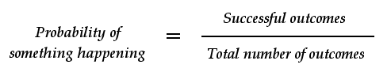
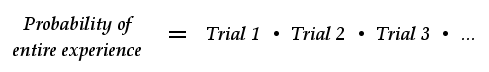
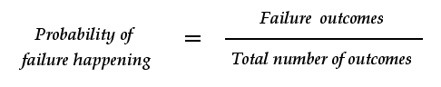
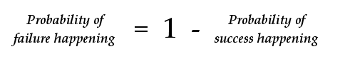
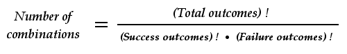
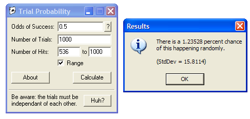

PsiPog.net
Understanding Probability and Significance
by Peebrain
Let's say you're practicing receiving images with your subconscious, and you decide to try and predict cards in a deck. You shuffle the deck, and attempt to see the top card psychically. You get a lock on the eight of hearts, check the card to see if you're right, and amazingly you are! What just happened? Could that have happened by chance, or is it really amazing? Is there a way we can measure how significant your experience was?
The answer is yes. Using math, we can figure out how likely it is for that experience to happen by chance. Then we can get a definite number of how significant your experience was. Welcome to the wonderful world of Probability! (If you don't want to learn about probability completely, then skip to the end to download free software to do the calculations for you.)
The Basics
First, we have to go over what probability actually means. Basically, the probability of something happening is calculated using the following formula:

First look at the "Total number of outcomes". This is how many ways we could have ended our experiment. In our card example, it's pretty easy - we could have chosen any of the 52 cards. So our total number of outcomes is 52.
Next, our "Successful outcomes" is a number smaller (or equal) to 52. This is how many of those 52 outcomes represent success. In our above example, with the eight of hearts, there is only one successful outcome - predicting the exact card.
So the probability of picking the eight of hearts is 1 / 52. If we punch that into our calculator, we get about 0.019. The number you get will always be between 0 and 1. To get the percentage, we just multiply by 100, or we can just move the decimal place to the right two places.
This means our final answer is that there is a 1.9% chance of picking the eight of hearts.
Another Example
Let's say we put the eight of hearts back into the deck, and decide to try again. We shuffle the deck, and then try to perceive the top card. But all we get is a hunch that it's a King... and we're not sure of the suit. We check the top card, and it's the King of diamonds! We're on a roll! But what are the odds of that?
We use the same formula as before. The total number of outcomes is still 52 because there are 52 cards in the deck. But in this case, our successful outcomes is going to be 4. Why? Because all we predicted was that a King was going to be on top. How many successful outcomes are there? Well, if it were a King of diamonds, spades, clubs, or hearts, we would have been successful. Therefore, there are 4 outcomes that represent success.
Dividing the numbers, 4 / 52, we get 0.077. Multiplying by 100, we get 7.7% chance off that happening. So it was still somewhat rare, but not by that much.
Back to Back
But wait a second... we just predicted the eight of hearts dead on. And then we predicted the king right after that. Surely those two events combined are pretty rare, right?
This is where things get tricky  .
.
First, we need to be fair. Before we begin testing, we have to outline exactly what represents success, and what represents failure. We can't change the rules in the middle of the game just because we got "close". Close doesn't cut it in statistics.
If we keep changing the rules every trial, then it's impossible to measure the significance of our overall experience. The first time, we were happy that we got it dead on, and calculated those odds... but the second time, we changed the rules to say we could ignore the suit. So we have to make a decision:
either the suit counts, or it doesn't. There is none of this, "well, if I get the suit right, then it counts... but if I get it wrong, then it doesn't." That's a little unfair, don't you think? 
Let's ignore the suit. How does this affect our calculations? Well, in the first trial where we got it dead on, our "successful outcomes" number gets changed. Instead of it being 1, it now has to be 4... because the eight of spades, clubs, and diamonds also count as success, in addition to the eight of hearts. This means the probability of guessing an eight correctly is 7.7%, and the probability of guessing a King correctly is 7.7%. They're the same.
Now that we're being fair, we can calculate the odds of getting them right back-to-back. To do this, we just use multiplication:

That means we take the probability of the first trial, multiply it by the probability of the second trial, and keep on multiplying each trial until we finish. In our example, we only have two trials - so our calculation would be 0.077 x 0.077, which is about 0.006. Remember not to use the percentage here - do NOT multiply 7.7% and 7.7%. Use the number you got at first, that was between 0 and 1 (which in our case, was 0.077).
So, the probability of our experience is about 0.6% - that's really good!
Quick Summary
Let's summarize where we are before we move on. To get the probability of a single event (i.e., one trial), all we do is divide the outcomes that represent success by the total number of outcomes. For example, if we were flipping a coin, then there would be 2 outcomes: heads or tails. And we wanted heads - so only 1 would represent success. That makes 1 / 2, or 0.5, or 50%. Makes sense.
Next, if we need to figure out the odds of multiple trials, we multiply all the trials together. Let's say we flipped a coin four times, and it came up correct each time... That would be 0.5 x 0.5 x 0.5 x 0.5 = 0.063, which is 6.3%.
You need to fully understand these two formulas before we move on. It gets a lot trickier after this  .
.
What About Failure?
It's easy to figure out things when we succeed... but what if we fail? Normally, if you are practicing for half an hour, you might get through 100 trials. Some will be successful, some will be failure. What are the odds of the entire experience?
It's pretty much the exact same formula as our first one, except instead of "successful outcomes", we use "failure outcomes". I.e.:

Let's go back to our card example. We are ignoring the suits, so our probability of success is 4 / 52, which is about 0.077. Well, if 4 outcomes represent success, and there are 52 outcomes total... then obviously the other 48 outcomes must represent failure. So our probability of failure is 48 / 52, which is around 0.923.
Or, we can think about this an entirely different way. We can either succeed or fail... there is no third option. So what is the probability that we succeed or fail? It's 100%. We're going to do either one or the other - there is no other option. So there is a 100% chance we're going to either succeed or fail.
100%, when converted back to decimal form, is 1. That means if we add the probability of success and the probability of failure together, we should get 1. If we know the probability of success, then we can figure out the probability of failure using this equation:

Think about it. 4 / 52 + 48 / 52 = 52 / 52. Or, 0.077 + 0.923 = 1. Or, probability of failure = 1 - 0.077 = 0.923. It all works out.
Back to Back ... Again
Now that we know the probability of success (0.077) and the probability of failure (0.923), we can figure out the odds of our entire experience.
Suppose we do 5 trials. Trial 1 was success, Trial 2 was success, Trial 3 was failure, Trial four was failure, and Trial 5 was success. How would we calculate the odds of this happening?
The same exact formula as before. We just multiply across. We have success x success x failure x failure x success. Or: 0.077 x 0.077 x 0.923 x 0.923 x 0.077 = 0.000389. Which is equal to 0.0389% chance of happening.
That seems insanely good! But I'm sorry to break it to you - we aren't done with our calculation. What we just calculated is correct - it is the probability of "success success failure failure success". But we have to think about this a little harder  .
.
Combination
How many successful trials did we have? Three total, right? We had three successful trials, and two failed trials. Let me ask you a question then - what are the odds of getting "failure failure success success success"?
The same as before, 0.0389%. What did I change? The order.
This is sometimes a hard concept to understand. What we calculated above are the odds of getting EXACTLY "success success failure failure success". IN THAT ORDER.
The reason we don't need to worry about order when we only have success is because the order is always the same. It's success, followed by more success. Now that we've thrown failure into the mix, we have to consider the order that things happen.
So now we run into problems. How many ways can we re-arrange success and failure? How many combinations are there with three successes, and two failures?
Let's list them out. I'll use S to mean success, and F to mean failure.
- S S S F F
- S S F S F
- S S F F S
- S F S S F
- S F S F S
- S F F S S
- F S S S F
- F S S F S
- F S F S S
- F F S S S
That should be all of them  . In each of those, we have three successes, and two failures. There are 10 total. This is getting a little tedious, huh?
. In each of those, we have three successes, and two failures. There are 10 total. This is getting a little tedious, huh? 
We've figured out the odds of getting S S F F S exactly. Now we need to consider all the other combinations. What are the odds of getting three successes and two failures? Well, we have to add the odds of getting each of those cases above. But we already know a little trick - the odds of each combination
is the same. Each one is equal to 0.000389. Now to add them together, we do 0.000389 + 0.000389 + ... OR, we can just multiply by 10  .
.
Take time to digest what is going on here. Stare at the screen until this makes sense. It will click, sometimes it just takes a while  . It took me a couple days to understand this from my college textbook!
. It took me a couple days to understand this from my college textbook!
There are 10 combinations of three successes and two failures. The probability of one of these combinations is 0.000389. To figure out the probability of the entire situation, we need to multiply 10 x 0.000389 = 0.00389, which is 0.389%.
Is there an easier way to do this without listing out every possibility? I mean, what if we have 100 trials, and 14 are successful. Do we have to list out every combination? Luckily, no - there is a handy formula for it:

Holy crap, what the hell does that mean?! 
Don't be intimidated. We shall defeat this beast of an equation! Math is cool! Right?! 
The exclamation point ! means "factorial". So we read the equation out loud like this: "The number of combinations equals total outcomes factorial, divided by, success outcomes factorial times failure outcomes factorial." Fancy that  .
.
What does factorial mean? It's easy to explain with an example. Five factorial, 5! = 5 x 4 x 3 x 2 x 1 = 120. All we do is multiply down until we get to 1. Seventy eight factorial, 78! = 78 x 77 x 76 x ... x 3 x 2 x 1 = a really huge number. So in our example above, we had 5 trials, 3 success, and 2 failure. Our equation for combination would be:
5! / (3! x 2!)
= (5 x 4 x 3 x 2 x 1) / (3 x 2 x 1 x 2 x 1)
= 120 / (6 x 2)
= 120 / 12 = 10
Ten! The answer we got by hand, remember?
Don't let this equation scare you. It is complicated, but luckily it's really popular, and a lot of scientific calculators have a button for it hidden away somewhere. It's called: combination! 
Quick Summary... Again
It's important that you understand the idea behind combination, and why we need it. You don't have to understand the equation completely... just understand the overall goal. Since we had to think about success and failure, we have to think about all the different combinations of this happening.
What are the odds of having three successful trials, and two failed trials, with our card experiment? It's the odds of doing a specific combination, multiplied by the number of combinations. The odds of doing a specific combination is 0.000389 (which we figured out first), and the number of combinations is 10... so the odds of three successes and two failures, in any order, is 0.000389 x 10 = 0.00389. Which is 0.389%.
Once you understand that, you are home free. The rest is pretty easy compared to this. Take a deep breath and prepare for the last tidbit of knowledge you need on your probability adventure!
What is "Success"?
What we've just calculated are the odds of getting three successes, and two failures. What if we had gotten four successes and one failure? Or five successes and zero failures? All of these outcomes would be awesome, right?
In statistics, they use the word "significance" instead of "awesome". It's the same thing. How awesome is it to get three successes and two failures? I.e., how significant is it?
Pretty much, the more success you get, the happier you are - right? Getting three successful trials out of five is pretty damn good. Getting four is even better. Getting all five is completely awesome though. When we ask ourselves how significant three successful trials are, we have to take into consideration that we would be even more happy about four and five successful trials.
Do to this, we add.
First, we figure out the odds of three success, two failure. Which is 0.00389. Then we figure out the odds of four success, one failure. Then we figure out the odds of five success, zero failure. And add all this together. This is a lot of math  .
.
Why do we do this? It's a way to be more fair. It's easier to understand with an example.
Suppose we flip a coin 1000 times. What are the odds of getting 500 heads, and 500 tails? If you take the time to do the math, the answer is 2.522%. This doesn't seem right though... it's a 50% chance of getting a heads or tails. After 1000 trials, we should be right around 500 heads, 500 tails.
The problem is that we've calculated the odds of getting EXACTLY 500 heads and 500 tails. We haven't taken into account 501 heads, and 499 tails, or 502 heads, and 498 tails. It's a little deceptive to say "the odds of my results were 2.522% I did awesome!" Well, no you didn't. Getting 500 heads is almost exactly chance. The only reason it looks significant is because you calculated getting EXACTLY 500 heads.
So we do a range instead. What are the odds of getting at least 500 heads? To do this, we take the probability of getting 500 heads + 501 heads + 502 heads + ... + 999 heads + 1000 heads. You thought that figuring out 500 heads was hard enough?! Think again - you have 499 more calculations to do before you're done! Then you have to add it all together!
If you do this math, the answer is there is a 51.261% chance of getting at least 500 heads. Now you can see how insignificant your results were. 51% is terribly crappy  .
.
Are there any shortcuts to this huge calculation? Unfortunately, not really. It's just something you gotta plug and chug. Don't worry - we do have one more trick up our sleeve before we throw our hands up in frustration...
The Computer
Why do all this crap to begin with? It's certainly important to understand the math behind it, but at the end of the day, I don't want to spend half an hour practicing, then seven hours calculating the odds of my results. That's why we have computers - if we tell the computer what we want to do, then we just give the computer our numbers, and click a button. Voila!
Lucky for you I'm such a nice guy (and nerd), that I've already written a program you can use:
Click here to download TrialProbability v1.3
(source code)
Download and run the program. Next, all you have to fill in are the odds of success (which is a number between 0 and 1), the number of trials, and the number of hits you got. Then hit calculate.
When you use the program to see how well you did at psionics, you should use check the "Range" box, and type the range from the number of hits you got, to the total number of trials. For example, let's look at the coin example from the last section.
The odds of success of flipping a coin is 0.5. If you need help calculating that, you can hit the question mark button to the right of that field on the program. Fill in 0.5 in that field.
Next, we had 1000 trials, so fill that in.
Lastly, let's assume we got 500 hits. Fill that in, but don't click on the range, and hit "Calculate". The answer should be 2.5225% chance.
To figure out how awesome this is, we should do a range instead. Select the "Range" checkbox, and fill in 1000 as the end of the range. Then click "Calculate". The answer should be 51.2613% - which sounds about right.
Let's suppose we got 536 hits instead. All we do is change the number of hits to the range 536 to 1000. Click "Calculate", and you can see there is a 1.23528% chance of that happening randomly.

What is a Good Score?
Remember to always select the range. After you do that and get an answer, you can gauge how well your practice session went. Probabilities below 5% are really good, and means you are definitely doing something. Under 1% is totally awesome, and means you could do a scientific test to prove conclusively that you are doing psionics.
Just remember that you need to use the program CORRECTLY. You need to fill in the right values to get the right answer, which is why understanding the theory behind it is important. If you need help, you can always ask on the forums. It would suck to become excited about results only because you typed in the wrong values... or it would suck even more to ignore results that are very significant!
Conclusion
Probability and statistics are a bitch. No doubt about it. Spend the time to understand it once, so that in the future you can have faith in your calculations, and you'll know you are using programs correctly.
Good luck, and happy practicing! 
- Sean (aka Peebrain)
Click here for printable version
Last Modified on August 12 2006
All Content, Images, Video, Text, and Software is © Copyright 2000-2006 PsiPog.net and their respective authors. All Rights Reserved.
You must agree to the Terms of Service and Privacy Policy to view this website. Click here to contact the webmaster.